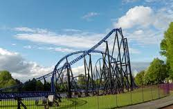
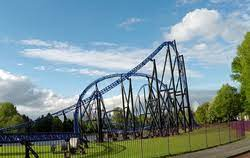

Mijn hobbies:
Games
Ik hou heel veel van games, maar niet op een 'normale' manier.
Ik vind de techische kant van de games heel interresant, vooral oude games!.
Hieronder zet ik een paar van mijn favoriete games:
- Super mario 64 (N64)
- The legend of Zelda: ocarina of time. (N64)
- Banjo Kazooie (N64)
Zoals je kan zien, dit zijn best oude games (allemaal van voor 2000).
Ik vind deze zo leuk door de glitches en de 'rewarding gameplay'
'Easy to play, hard to master'
Ik weet zelfs hoedat de code werkt!
Coderen
Ik vind het heel leuk om te coderen.
Ik wil er later ook m'n toekomst mee maken.
Nudat ik ook weet hoedat je de code moet lezen, Kan ik nog meer leren over mijn favoriete games!
Achtbanen
Dit is nog een vrij nieuwe hobby van mij.
De eerste keer dat ik in een 'echte' achtbaan ging was in juni,2022.
Een vriend van mij heeft mij ervan overtuigt dat het niks voorstelst, zo'n looping.
Nu ben ik er blij mee dat dat hem na 4 jaar is gelukt.

 
